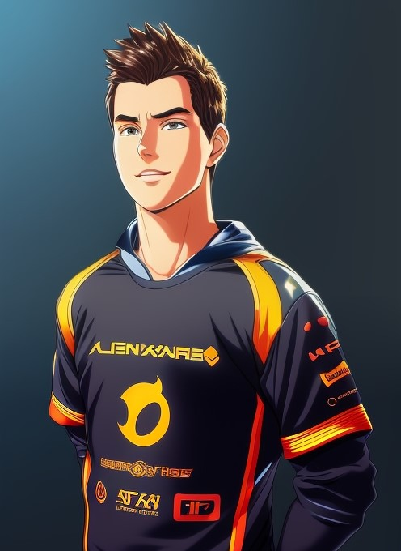

|

|
Антон, 24г. ВладимирЗдравствуйте! Меня зовут Антон, и я опытный тестировщик ПО с глубоким пониманием процессов разработки и обеспечения качества. Я специализируюсь на автоматизированном и ручном тестировании, и моя цель — обнаружение и устранение ошибок до того, как они станут проблемами для пользователей. Я внимателен к деталям и обладаю навыками написания тест-кейсов, которые помогают улучшить продукт на каждом этапе его жизненного цикла. В свободное время я изучаю новые инструменты тестирования и участвую в сообществах тестировщиков, чтобы быть в курсе последних трендов в области QA. Если вам нужен тестировщик, который может быстро адаптироваться к новым проектам и работать в команде, свяжитесь со мной! |